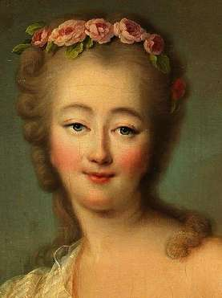

ПОПРЫГУНЬЯ-СТРЕКОЗА
Прольем слезу над участью глупой, красивой, беспечной стрекозы Жанны Бекю, более известной как графиня Дюбарри (1743 — 1793).
Жанна была последней фавориткой сластолюбивого и расточительного Людовика Пятнадцатого. В отличие от предыдущей временщицы мадам де Помпадур в политику не вмешивалась, в интригах не участвовала (только если втягивали какие-нибудь ловкачи), никого не обижала, любила праздники, веселье, наряды и побрякушки. После смерти своего патрона немножко поволновалась — получится ли и дальше жить столь же приятно? Получилось, и даже еще лучше. Вместо старого, обрюзгшего короля завелись новые любовники, один милей другого.
Жанна лето красное пропела, оглянуться не успела — грянула революция. В отличие от умной Матильды Кшесинской, которая не стала себя навязывать победившему пролетариату, мадам Дюбарри никуда не уехала, осталась в своем уютном, бонтонном замке, уверенная, что всё как-нибудь обойдется, а когда наконец собралась эмигрировать, было уже поздно — начался Террор, «бывших» хватали всех подряд. Вспомнили и про королевскую любовницу.
Когда Жанну везли на казнь, она жалобно кричала: «Вы хотите сделать мне больно?! Но за что?!». Последние ее слова были: «Мсье палач, ну пожалуйста, еще минуточку!». Палач однако минуточку ей не дал, у него в тот короткий зимний день, 8 декабря 1793 года, было много работы.
Давайте сегодня всех жалеть. Даже тех, кто никчемен и сам во всем виноват.